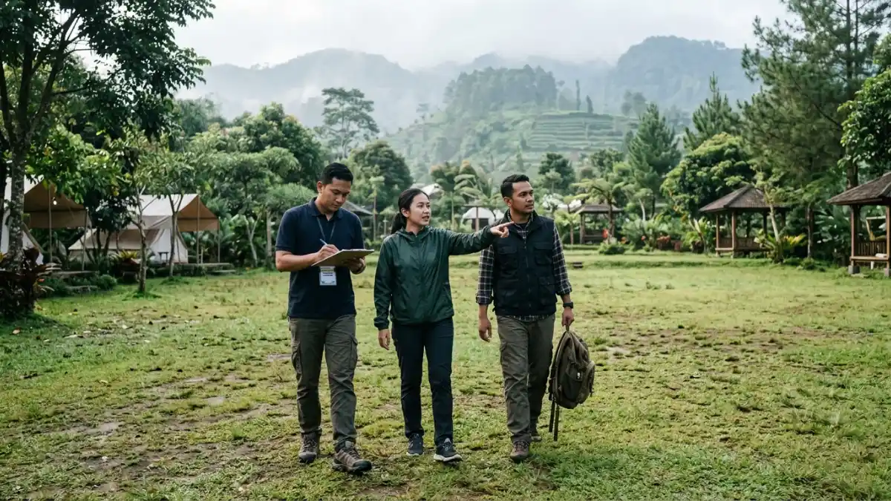

Lokasi meeting alam terbuka di Batu sebaiknya dipilih berdasarkan kapasitas, akses, dan rencana cadangan indoor. (Ilustrasi)
Lokasi meeting alam terbuka di Batu sebaiknya dipilih berdasarkan kapasitas, akses, dan rencana cadangan indoor. (Ilustrasi)
Lokasi meeting alam terbuka di Batu sebaiknya dipilih berdasarkan kapasitas, akses jalan, listrik, sinyal, area teduh, dan rencana cadangan indoor saat hujan.
- Jenis lokasi yang umum meliputi glamping, vila bertaman, kebun agrowisata, camp ground, dan resort pegunungan.
- Kriteria dasar adalah kapasitas, akses, listrik, sinyal, toilet, area teduh, dan ruang cadangan.
- Okupansi hotel di Batu mencapai hingga 90 persen pada libur sekolah 2026, sehingga pemesanan dini penting.
- Survei lokasi dan daftar pertanyaan untuk pengelola mengurangi risiko masalah di hari acara.
DAFTAR ISI
- 1. Apa saja jenis lokasi untuk meeting alam terbuka di Batu?
- 2. Kriteria apa yang perlu dicek sebelum memilih venue?
- 3. Bagaimana memilih lokasi sesuai jumlah peserta?
- 4. Seberapa penting akses dari Malang dan Surabaya?
- 5. Kapan waktu terbaik memesan lokasi meeting alam terbuka di Batu?
- 6. Pertanyaan apa yang perlu diajukan kepada pengelola venue?
- 7. Kesimpulan
1. Apa saja jenis lokasi untuk meeting alam terbuka di Batu?
Jenis lokasi yang umum meliputi glamping, vila dengan taman, kebun agrowisata, area camp ground, resort pegunungan, dan kafe dengan area outdoor luas.
Setiap jenis lokasi memiliki karakter berbeda. Glamping menawarkan tenda berfasilitas lengkap dan cocok untuk acara menginap, tetapi ruang rapat biasanya terbatas pada satu area bersama.
Vila dengan taman nyaman untuk kelompok kecil hingga menengah karena ada ruang tertutup sekaligus halaman, namun kapasitasnya terbatas.
Kebun agrowisata menawarkan pengalaman khas Batu, seperti suasana kebun buah atau sayur, tetapi fasilitas teknis sering sederhana sehingga perlu perlengkapan tambahan.
Camp ground cocok untuk komunitas dengan anggaran terbatas dan keinginan beraktivitas fisik, tetapi kenyamanan rapat dan fasilitas toilet harus diperiksa lebih teliti.
Resort pegunungan biasanya menyediakan paket lengkap berisi ruang rapat semi terbuka, akomodasi, dan konsumsi, sehingga cocok untuk perusahaan yang mengutamakan kemudahan.
Kafe dengan area outdoor luas praktis untuk rapat setengah hari tanpa menginap, namun privasi dan tingkat kebisingan perlu dipastikan sebelum memesan.
2. Kriteria apa yang perlu dicek sebelum memilih venue?
Kriteria utama venue meliputi kapasitas, akses kendaraan, ketersediaan listrik dan sinyal, toilet, area teduh, tempat parkir, serta ruang cadangan tertutup.
Kapasitas harus dicek berdasarkan jumlah peserta ditambah panitia dan tamu undangan, bukan hanya peserta inti.
Tanyakan juga kapasitas ruang cadangan, karena banyak venue memiliki area terbuka luas tetapi ruang tertutup yang kecil.
Akses kendaraan menentukan apakah bus, minibus, atau hanya mobil pribadi yang bisa mencapai lokasi.
Jalan sempit dan menanjak di kawasan pegunungan dapat menyulitkan kendaraan besar. Pastikan untuk memeriksa area parkir guna memastikan tidak ada hambatan bagi kedatangan para peserta.
Listrik dan sinyal sering menjadi sumber masalah di lokasi berkonsep alam. Mintalah informasi jumlah titik listrik, kapasitas daya, dan operator seluler yang kuat di lokasi. Jika memungkinkan, lakukan uji panggilan dan uji unggah dokumen saat survei.
Terakhir, periksa kebersihan toilet, ketersediaan air bersih, area teduh, dan kebijakan pengelola terhadap kebisingan serta penggunaan sound system, terutama bila lokasi berdekatan dengan penginapan tamu lain.
3. Bagaimana memilih lokasi sesuai jumlah peserta?
Jumlah peserta menentukan luas area, jenis tata letak, kebutuhan tenda, dan jumlah fasilitator, sehingga pemilihan lokasi harus dimulai dari estimasi peserta yang realistis.
Sebagai pedoman umum, kelompok kecil sekitar 10 hingga 20 orang nyaman di vila bertaman atau glamping dengan satu area bersama. Dalam kelompok tersebut, konfigurasi melingkar memfasilitasi pertukaran pendapat tanpa memerlukan peralatan audio.
Kelompok menengah sekitar 20 hingga 60 orang biasanya membutuhkan area dengan tenda atau gazebo besar, sound system sederhana, dan pembagian kelompok diskusi. Pada ukuran ini, siapkan juga ruang tambahan untuk sesi kelompok kecil agar tidak saling mengganggu.
Kelompok besar di atas 60 orang memerlukan perencanaan lebih ketat, seperti zonasi area, beberapa fasilitator, jalur evakuasi, dan transportasi terkoordinasi. Pada skala ini, resort atau area wisata dengan fasilitas lengkap umumnya lebih aman dibanding lokasi sederhana.
Angka tersebut hanya pedoman dan dapat bervariasi tergantung tata letak serta kebijakan masing-masing venue. Selalu minta kapasitas resmi dari pengelola secara tertulis.

Survei venue secara langsung sangat disarankan untuk memeriksa kesiapan teknis seperti kapasitas, listrik, dan sinyal sebelum memesan. (Ilustrasi)4. Seberapa penting akses dari Malang dan Surabaya?
Akses sangat penting karena Kota Batu sekitar 15 kilometer dari Malang dan sekitar 90 kilometer dari Surabaya, sehingga durasi perjalanan memengaruhi jadwal dan kebugaran peserta.
Menurut literatur wilayah, Kota Batu terletak di sebelah barat Kota Malang dengan jarak sekitar 15 kilometer.
Bagi peserta dari Malang Raya, perjalanan relatif singkat sehingga acara setengah hari dapat dimulai pagi tanpa menginap.
Untuk peserta dari Surabaya, Kota Batu berada sekitar 90 kilometer di barat daya Surabaya. Perjalanan darat yang cukup panjang berarti jadwal tiba sebaiknya diberi jeda sebelum sesi inti, atau pertimbangkan menginap agar rapat tidak dimulai dalam kondisi lelah.
Selain jarak, perhatikan kondisi jalan menuju venue, terutama di kawasan lereng. Jalan menanjak dan kabut dapat memperlambat perjalanan, sehingga tambahkan waktu penyangga pada jadwal kedatangan dan kepulangan peserta.
5. Kapan waktu terbaik memesan lokasi meeting alam terbuka di Batu?
Waktu terbaik adalah hari kerja di luar musim libur, dengan pemesanan jauh hari karena akhir pekan dan libur sekolah memiliki permintaan dan okupansi tinggi.
Data Dinas Pariwisata Kota Batu menunjukkan betapa ramainya kota ini saat libur. Hingga 12 Juli 2026, kunjungan wisatawan sementara mencapai 362.869 dan okupansi hotel melonjak hingga 90 persen. Dengan kondisi seperti itu, venue favorit cepat penuh dan tarif cenderung naik.
Di luar musim libur, kunjungan tetap tinggi. Dinas Pariwisata menyebutkan rata-rata kunjungan bulanan pada Januari hingga Maret 2026 sekitar 432 ribu wisatawan.
Karena itu, tidak ada bulan yang benar-benar sepi, dan pemesanan tetap sebaiknya dilakukan beberapa minggu atau bulan sebelumnya, tergantung ukuran acara.
Jika tanggal fleksibel, pilih Selasa hingga Kamis. Hari tersebut umumnya lebih longgar, lebih mudah dinegosiasikan, dan lalu lintas menuju Batu lebih lancar dibanding akhir pekan.
6. Pertanyaan apa yang perlu diajukan kepada pengelola venue?
Ajukan pertanyaan tentang kapasitas, tarif paket, kebijakan hujan, fasilitas teknis, aturan suara, jam operasional, dan syarat pembatalan sebelum menandatangani kesepakatan.
Pertanyaan yang sebaiknya masuk daftar adalah sebagai berikut:
- Berapa kapasitas area terbuka dan ruang tertutup cadangan?
- Apakah terdapat rincian mengenai komponen-komponen yang tercakup dalam paket tersebut, serta biaya-biaya tambahan yang mungkin dikenakan kepada pelanggan?
- Bagaimana kebijakan jika hujan, apakah ada penggantian jadwal atau ruang?
- Berapa titik listrik dan daya yang tersedia, serta bagaimana kekuatan sinyal?
- Apakah terdapat batasan terhadap penggunaan sistem suara atau pembatasan waktu penyelenggaraan acara?
- Bagaimana syarat uang muka, pembatalan, dan perubahan jumlah peserta?
- Apakah tersedia tenaga pendamping atau petugas keamanan di lokasi?
Simpan semua jawaban secara tertulis, misalnya melalui pesan atau surat penawaran. Dokumen ini membantu bila terjadi perbedaan pemahaman di kemudian hari.
7. Kesimpulan
Memilih lokasi meeting alam terbuka di Batu berarti menyeimbangkan suasana dengan fungsi. Mulai dari jumlah peserta, cek kapasitas, akses, listrik, sinyal, dan ruang cadangan, lalu ajukan pertanyaan tertulis kepada pengelola.
Karena okupansi hotel dan kunjungan wisata tinggi sepanjang 2026, lakukan pemesanan dini dan pilih hari kerja bila memungkinkan.